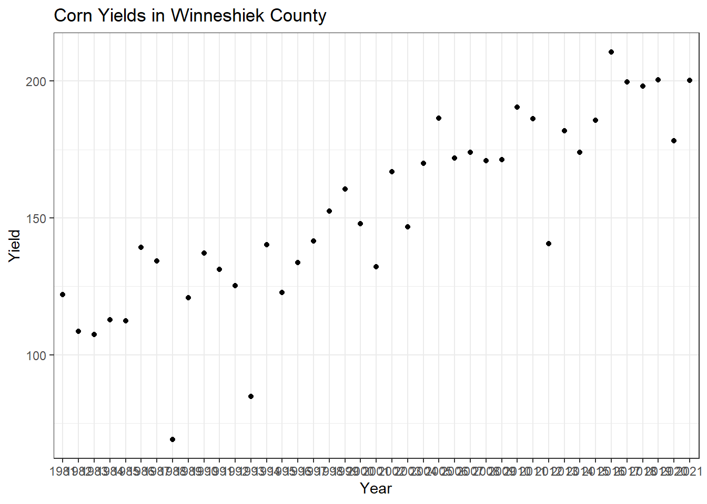
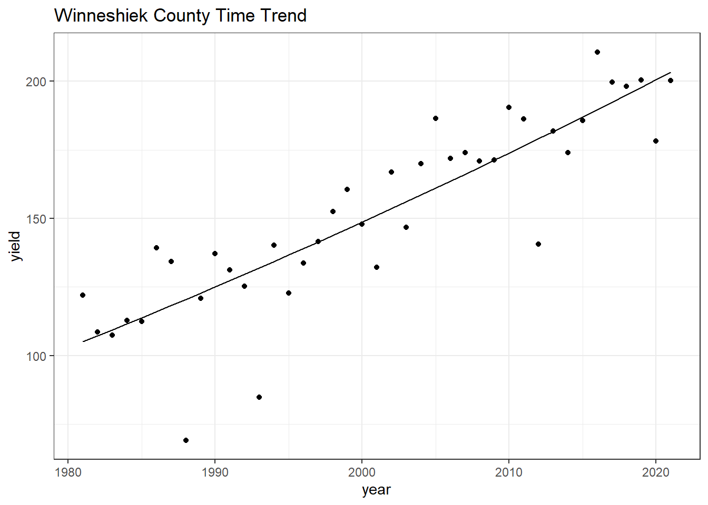
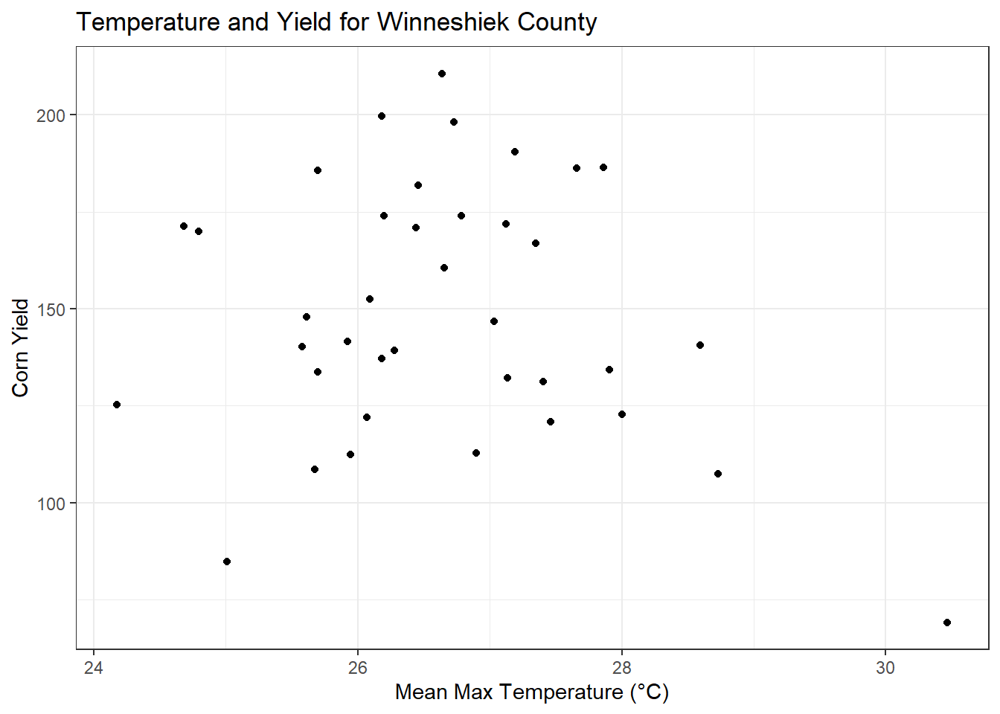
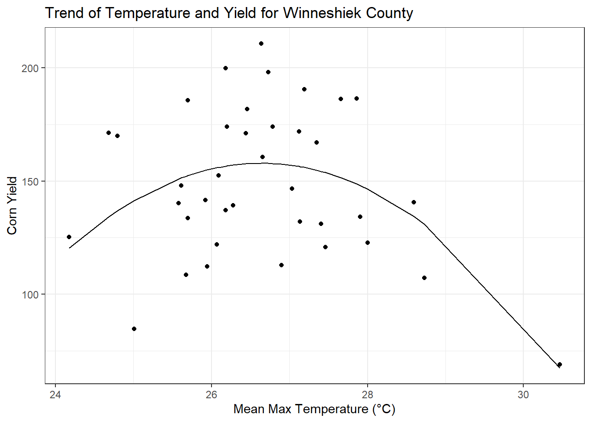
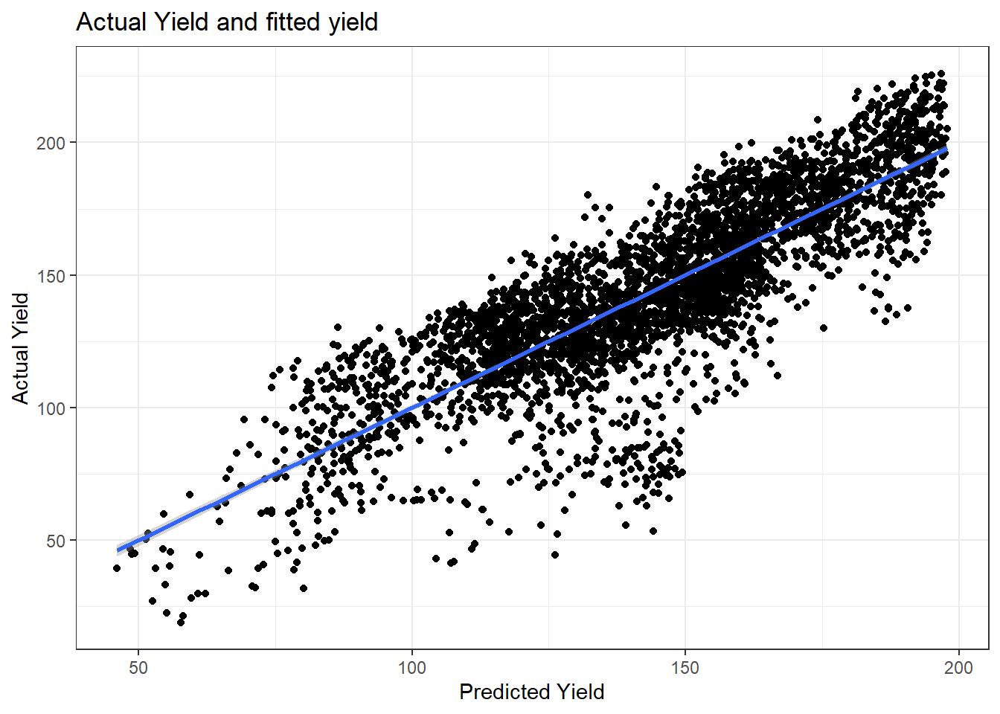

Chapter 4 Regressions
Using regressions to make assumptions about data trends
4.1 Weather Data Analysis
Load the PRISM daily maximum temperatures
# daily max temperature
# dimensions: counties x days x years
prism <- readMat("data/prismiowa.mat")
# look at county #1
t_1981_c1 <- prism$tmaxdaily.iowa[1,,1]
t_1981_c1[366]## [1] NaN# assign dimension names to tmax matrix
dimnames(prism$tmaxdaily.iowa) <- list(prism$COUNTYFP, 1:366, prism$years)
# converted 3d matrix into a data frame
tmaxdf <- as.data.frame.table(prism$tmaxdaily.iowa)
# relabel the columns
colnames(tmaxdf) <- c("countyfp","doy","year","tmax")
tmaxdf <- tibble(tmaxdf)4.2 Temperature trends
Summer temperature trends: Winneshiek County
tmaxdf$doy <- as.numeric(tmaxdf$doy)
tmaxdf$year <- as.numeric(as.character(tmaxdf$year))
winnesummer <- tmaxdf %>%
filter(countyfp==191 & doy >= 152 & doy <= 243) %>%
group_by(year) %>%
summarize(meantmax = mean(tmax))
ggplot(winnesummer, mapping = aes(x = year, y = meantmax)) +
geom_point() +
theme_bw() +
labs(x = "year", y = "Tmax (°C)") +
geom_smooth(method = lm)## `geom_smooth()` using formula 'y ~ x'
Winter Temperatures - Winneshiek County
winnewinter <- tmaxdf %>%
filter(countyfp==191 & (doy <= 59 | doy >= 335) & !is.na(tmax)) %>%
group_by(year) %>%
summarize(meantmax = mean(tmax))
ggplot(winnewinter, mapping = aes(x = year, y = meantmax)) +
geom_point() +
theme_bw() +
labs(x = "year", y = "Tmax (°C)") +
geom_smooth(method = lm)## `geom_smooth()` using formula 'y ~ x'
4.3 Multiple regression –
Quadratic time trend
winnewinter$yearsq <- winnewinter$year^2
lm_wintertmaxquad <- lm(meantmax ~ year + yearsq, winnewinter)
summary(lm_wintertmaxquad)##
## Call:
## lm(formula = meantmax ~ year + yearsq, data = winnewinter)
##
## Residuals:
## Min 1Q Median 3Q Max
## -3.3539 -1.2985 -0.2813 1.4055 4.2620
##
## Coefficients:
## Estimate Std. Error t value Pr(>|t|)
## (Intercept) -1.086e+04 1.238e+04 -0.877 0.386
## year 1.085e+01 1.239e+01 0.876 0.387
## yearsq -2.710e-03 3.097e-03 -0.875 0.388
##
## Residual standard error: 2.051 on 35 degrees of freedom
## Multiple R-squared: 0.02694, Adjusted R-squared: -0.02867
## F-statistic: 0.4845 on 2 and 35 DF, p-value: 0.6201winnewinter$fitted <- lm_wintertmaxquad$fitted.values
ggplot(winnewinter) +
geom_point(mapping = aes(x = year, y = meantmax)) +
geom_line(mapping = aes(x = year, y = fitted)) +
theme_bw() +
labs(x = "year", y = "tmax")
4.4 Download NASS corn yield data
USDA NASS data download
# set our API key with NASS
nassqs_auth(key = "2FCF525A-8D93-3647-9216-07E60D61705D")
# parameters to query on
params <- list(commodity_desc = "CORN", util_practice_desc = "GRAIN", prodn_practice_desc = "ALL PRODUCTION PRACTICES", year__GE = 1981, state_alpha = "IA")
# download
cornyieldsall <- nassqs_yields(params)
cornyieldsall$county_ansi <- as.numeric(cornyieldsall$county_ansi)
cornyieldsall$yield <- as.numeric(cornyieldsall$Value)
# clean and filter this dataset
cornyields <- select(cornyieldsall, county_ansi, county_name,county_code, yield, year) %>%
filter(!is.na(county_ansi) & !is.na(yield))
cornyields <- tibble(cornyields)##Question 1a: Extract Winneshiek County corn yields, fit a linear time trend, make a plot. Is there a significant time trend?
winne<- cornyieldsall%>%
filter(county_name=='WINNESHIEK')
Winne_CY <- tibble(winne)
Winne_CY$yield <- as.numeric(Winne_CY$yield)
ggplot(Winne_CY, mapping = aes(x=year, y=yield))+
geom_point()+
theme_bw()+
geom_smooth(method = lm)+
xlab("Year")+
ylab("Yield")+
ggtitle("Corn Yields in Winneshiek County")## `geom_smooth()` using formula 'y ~ x'
## There is an increasing linear trend between year and yield.4.4.1 Question 1b: Fit a quadratic time trend (i.e., year + year^2) and make a plot. Is there evidence for slowing yield growth?
Winne_CY$year <- as.numeric(Winne_CY$year)
Winne_CY$yearsq <- Winne_CY$year^2
lm_winnequad <- lm(yield ~ year + yearsq, Winne_CY)
summary(lm_winnequad)##
## Call:
## lm(formula = yield ~ year + yearsq, data = Winne_CY)
##
## Residuals:
## Min 1Q Median 3Q Max
## -51.384 -3.115 1.388 9.743 25.324
##
## Coefficients:
## Estimate Std. Error t value Pr(>|t|)
## (Intercept) 2.583e+04 8.580e+04 0.301 0.765
## year -2.812e+01 8.576e+01 -0.328 0.745
## yearsq 7.641e-03 2.143e-02 0.357 0.723
##
## Residual standard error: 17.17 on 38 degrees of freedom
## Multiple R-squared: 0.7559, Adjusted R-squared: 0.7431
## F-statistic: 58.84 on 2 and 38 DF, p-value: 2.311e-12Winne_CY$fitted <- lm_winnequad$fitted.values
ggplot(Winne_CY) +
geom_point(mapping = aes(x = year, y = yield)) +
geom_line(mapping = aes(x = year, y = fitted)) +
theme_bw() +
labs(x = "year", y = "yield")+
ggtitle("Winneshiek County Time Trend")
message("There does not seem to be evidence of slowing yield in Winneshiek County because there is a positive quadratic relationship. ")## There does not seem to be evidence of slowing yield in Winneshiek County because there is a positive quadratic relationship.4.5 Question 2
Time Series: Let’s analyze the relationship between temperature and yields for the Winneshiek County time series. Use data on yield and summer avg Tmax. Is adding year or Tmax^2 to your model helpful? Make a plot and interpret the results.
## Joining, by = "year"ggplot(q2,aes(x=meantmax, y=yield))+
theme_bw()+
geom_point()+
labs(x="Mean Max Temperature (°C)", y="Corn Yield")+
ggtitle("Temperature and Yield for Winneshiek County")
##
## Call:
## lm(formula = yield ~ meantmax + tmp2, data = q2)
##
## Residuals:
## Min 1Q Median 3Q Max
## -56.587 -22.262 -0.982 22.409 52.798
##
## Coefficients:
## Estimate Std. Error t value Pr(>|t|)
## (Intercept) -4223.604 1446.639 -2.920 0.00609 **
## meantmax 328.918 107.068 3.072 0.00410 **
## tmp2 -6.173 1.979 -3.119 0.00362 **
## ---
## Signif. codes: 0 '***' 0.001 '**' 0.01 '*' 0.05 '.' 0.1 ' ' 1
##
## Residual standard error: 29.5 on 35 degrees of freedom
## Multiple R-squared: 0.2417, Adjusted R-squared: 0.1984
## F-statistic: 5.579 on 2 and 35 DF, p-value: 0.007887q2$fittedq <- lm_quad$fitted.values
ggplot(q2)+
geom_point(mapping = aes(x=meantmax, y=yield))+
geom_line(mapping = aes(x=meantmax, y=fittedq))+
theme_bw()+
labs(x="Mean Max Temperature (°C)", y="Corn Yield")+
ggtitle("Trend of Temperature and Yield for Winneshiek County")
message('Adding a model of Tmax^2 is helpful to interperte the trends of temperature and its effects on corn yield. From this graph you can see as temperature increases yield does as well until a threshold is reached and yield begins to decrease as temperature gets hotter.' )## Adding a model of Tmax^2 is helpful to interperte the trends of temperature and its effects on corn yield. From this graph you can see as temperature increases yield does as well until a threshold is reached and yield begins to decrease as temperature gets hotter.4.6 Question 3
Cross-Section: Analyze the relationship between temperature and yield across all counties in 2018. Is there a relationship? Interpret the results.
colnames(cornyields)[1]="countyfp"
cornyields$countyfp<- as.numeric(cornyields$countyfp)
tmaxdf$countyfp<- as.numeric(tmaxdf$countyfp)
yield18<- cornyields%>%
filter(year=='2018')
temp18<-tmaxdf%>%
filter(year=='2018')
jd18<-inner_join(yield18, temp18, by ="countyfp")%>%
filter(!is.na(tmax))%>%
group_by(countyfp, yield)%>%
summarise(meanTmax=mean(tmax))## `summarise()` has grouped output by 'countyfp'. You can override using the
## `.groups` argument.ggplot(mapping = aes(x=jd18$meanTmax, y=jd18$yield))+
geom_point()+
ggtitle("2018 Temperature and Yield Analysis")+
theme_bw()+
labs(x="Mean Max Temperature (°C)", y="Corn Yield")+
geom_smooth(method = lm)## `geom_smooth()` using formula 'y ~ x'
message('There does not seem to be much of a trend between temperature and corn yield over all of the counties in 2018. When a linear model if fitted to the data you can see a slight decreasing trend in temperature vs yield. ')## There does not seem to be much of a trend between temperature and corn yield over all of the counties in 2018. When a linear model if fitted to the data you can see a slight decreasing trend in temperature vs yield.4.7 Question 4
Panel: One way to leverage multiple time series is to group all data into what is called a “panel” regression. Convert the county ID code (“countyfp” or “county_ansi”) into factor using as.factor, then include this variable in a regression using all counties’ yield and summer temperature data. How does the significance of your temperature coefficients (Tmax, Tmax^2) change? Make a plot comparing actual and fitted yields and interpret the results of your model.
summer <- tmaxdf %>%
filter(doy >= 152 & doy <= 243) %>%
group_by(year) %>%
summarize(meantmax = mean(tmax))
cornyields$year <- as.numeric(cornyields$year)
combo<- inner_join(cornyields, summer, by='year')
combo$fac<- as.factor(combo$countyfp)
combo$temp2<-combo$meantmax^2
lm_combo<-lm(yield~meantmax+temp2+year+fac, combo)
summary(lm_combo)##
## Call:
## lm(formula = yield ~ meantmax + temp2 + year + fac, data = combo)
##
## Residuals:
## Min 1Q Median 3Q Max
## -90.667 -9.604 1.444 13.250 48.201
##
## Coefficients:
## Estimate Std. Error t value Pr(>|t|)
## (Intercept) -5.787e+03 1.217e+02 -47.548 < 2e-16 ***
## meantmax 1.154e+02 8.252e+00 13.989 < 2e-16 ***
## temp2 -2.172e+00 1.469e-01 -14.794 < 2e-16 ***
## year 2.199e+00 2.972e-02 73.980 < 2e-16 ***
## fac3 -4.363e+00 4.495e+00 -0.971 0.331814
## fac5 1.088e+01 4.495e+00 2.420 0.015567 *
## fac7 -1.902e+01 4.526e+00 -4.202 2.71e-05 ***
## fac9 8.829e+00 4.495e+00 1.964 0.049603 *
## fac11 1.246e+01 4.495e+00 2.772 0.005602 **
## fac13 1.407e+01 4.495e+00 3.130 0.001761 **
## fac15 1.844e+01 4.495e+00 4.102 4.19e-05 ***
## fac17 1.871e+01 4.495e+00 4.162 3.22e-05 ***
## fac19 1.517e+01 4.495e+00 3.374 0.000749 ***
## fac21 1.518e+01 4.495e+00 3.377 0.000740 ***
## fac23 1.544e+01 4.495e+00 3.434 0.000601 ***
## fac25 1.612e+01 4.495e+00 3.586 0.000341 ***
## fac27 1.398e+01 4.495e+00 3.111 0.001880 **
## fac29 6.453e+00 4.495e+00 1.435 0.151258
## fac31 2.040e+01 4.495e+00 4.538 5.86e-06 ***
## fac33 1.239e+01 4.495e+00 2.757 0.005858 **
## fac35 1.935e+01 4.495e+00 4.304 1.72e-05 ***
## fac37 1.023e+01 4.495e+00 2.277 0.022866 *
## fac39 -2.427e+01 4.526e+00 -5.362 8.73e-08 ***
## fac41 1.341e+01 4.495e+00 2.984 0.002866 **
## fac43 1.654e+01 4.495e+00 3.680 0.000236 ***
## fac45 1.553e+01 4.495e+00 3.456 0.000555 ***
## fac47 1.133e+01 4.495e+00 2.521 0.011753 *
## fac49 1.189e+01 4.495e+00 2.646 0.008180 **
## fac51 -1.859e+01 4.526e+00 -4.108 4.09e-05 ***
## fac53 -1.720e+01 4.526e+00 -3.801 0.000147 ***
## fac55 1.704e+01 4.495e+00 3.790 0.000153 ***
## fac57 9.116e+00 4.495e+00 2.028 0.042650 *
## fac59 1.033e+01 4.495e+00 2.298 0.021635 *
## fac61 1.726e+01 4.495e+00 3.838 0.000126 ***
## fac63 1.533e+01 4.495e+00 3.410 0.000657 ***
## fac65 1.538e+01 4.495e+00 3.421 0.000632 ***
## fac67 1.219e+01 4.495e+00 2.713 0.006704 **
## fac69 1.824e+01 4.495e+00 4.057 5.08e-05 ***
## fac71 4.174e+00 4.495e+00 0.928 0.353237
## fac73 1.659e+01 4.495e+00 3.692 0.000226 ***
## fac75 1.816e+01 4.495e+00 4.040 5.45e-05 ***
## fac77 4.829e+00 4.495e+00 1.074 0.282799
## fac79 1.814e+01 4.495e+00 4.035 5.58e-05 ***
## fac81 1.666e+01 4.495e+00 3.706 0.000214 ***
## fac83 1.938e+01 4.495e+00 4.312 1.66e-05 ***
## fac85 6.074e+00 4.495e+00 1.351 0.176745
## fac87 3.134e+00 4.495e+00 0.697 0.485714
## fac89 9.113e+00 4.495e+00 2.027 0.042710 *
## fac91 1.740e+01 4.495e+00 3.871 0.000110 ***
## fac93 1.729e+01 4.495e+00 3.846 0.000122 ***
## fac95 9.826e+00 4.495e+00 2.186 0.028887 *
## fac97 5.045e+00 4.495e+00 1.122 0.261845
## fac99 1.697e+01 4.495e+00 3.775 0.000162 ***
## fac101 -5.500e+00 4.495e+00 -1.223 0.221224
## fac103 7.003e+00 4.495e+00 1.558 0.119378
## fac105 1.369e+01 4.495e+00 3.045 0.002346 **
## fac107 1.571e+00 4.495e+00 0.349 0.726746
## fac109 1.997e+01 4.495e+00 4.441 9.20e-06 ***
## fac111 -3.897e+00 4.495e+00 -0.867 0.386010
## fac113 1.196e+01 4.495e+00 2.660 0.007847 **
## fac115 4.632e+00 4.495e+00 1.030 0.302934
## fac117 -2.184e+01 4.557e+00 -4.793 1.71e-06 ***
## fac119 1.411e+01 4.495e+00 3.139 0.001709 **
## fac121 -1.661e+00 4.495e+00 -0.369 0.711860
## fac123 7.953e+00 4.495e+00 1.769 0.076964 .
## fac125 1.505e+00 4.495e+00 0.335 0.737758
## fac127 1.995e+01 4.495e+00 4.438 9.35e-06 ***
## fac129 3.948e+00 4.557e+00 0.866 0.386439
## fac131 1.537e+01 4.495e+00 3.418 0.000637 ***
## fac133 -1.079e+00 4.495e+00 -0.240 0.810332
## fac135 -1.590e+01 4.526e+00 -3.513 0.000448 ***
## fac137 2.805e+00 4.495e+00 0.624 0.532642
## fac139 8.576e+00 4.495e+00 1.908 0.056492 .
## fac141 2.073e+01 4.495e+00 4.612 4.12e-06 ***
## fac143 1.629e+01 4.495e+00 3.623 0.000295 ***
## fac145 -3.671e+00 4.495e+00 -0.817 0.414190
## fac147 1.427e+01 4.495e+00 3.175 0.001510 **
## fac149 1.027e+01 4.495e+00 2.284 0.022449 *
## fac151 1.764e+01 4.495e+00 3.924 8.87e-05 ***
## fac153 1.427e+01 4.495e+00 3.175 0.001510 **
## fac155 1.022e+01 4.526e+00 2.259 0.023966 *
## fac157 1.257e+01 4.495e+00 2.796 0.005203 **
## fac159 -2.102e+01 4.495e+00 -4.676 3.04e-06 ***
## fac161 1.519e+01 4.495e+00 3.380 0.000734 ***
## fac163 2.032e+01 4.495e+00 4.520 6.37e-06 ***
## fac165 1.143e+01 4.495e+00 2.542 0.011069 *
## fac167 1.963e+01 4.495e+00 4.366 1.30e-05 ***
## fac169 1.662e+01 4.495e+00 3.697 0.000222 ***
## fac171 1.516e+01 4.495e+00 3.371 0.000756 ***
## fac173 -1.572e+01 4.526e+00 -3.473 0.000521 ***
## fac175 -1.095e+01 4.526e+00 -2.420 0.015579 *
## fac177 -1.460e+01 4.495e+00 -3.247 0.001176 **
## fac179 -5.989e+00 4.526e+00 -1.323 0.185792
## fac181 -2.482e+00 4.495e+00 -0.552 0.580959
## fac183 8.547e+00 4.495e+00 1.901 0.057330 .
## fac185 -2.161e+01 4.526e+00 -4.775 1.87e-06 ***
## fac187 2.020e+01 4.495e+00 4.493 7.24e-06 ***
## fac189 1.633e+01 4.495e+00 3.634 0.000283 ***
## fac191 1.291e+01 4.495e+00 2.871 0.004118 **
## fac193 4.774e+00 4.495e+00 1.062 0.288343
## fac195 1.419e+01 4.495e+00 3.156 0.001610 **
## fac197 1.838e+01 4.495e+00 4.088 4.44e-05 ***
## ---
## Signif. codes: 0 '***' 0.001 '**' 0.01 '*' 0.05 '.' 0.1 ' ' 1
##
## Residual standard error: 19.59 on 3646 degrees of freedom
## Multiple R-squared: 0.6977, Adjusted R-squared: 0.6893
## F-statistic: 83.3 on 101 and 3646 DF, p-value: < 2.2e-16combo$fitted<-lm_combo$fitted.values
ggplot()+
geom_point(combo, mapping=aes(x=fitted, y=yield))+
geom_smooth(combo, mapping=aes(x=fitted, y=yield),method = lm)+
theme_bw()+
labs(x='Predicted Yield', y='Actual Yield')+
ggtitle("Actual Yield and fitted yield")## `geom_smooth()` using formula 'y ~ x'
message('The model fits yield based on multiple variables including mean max temp, temperature squared, each county, and each year. The coefficients for temperature is positive but the coefficient for temp^2 is negative. The graph shows how well the modeled predicts values for yield, it is not quite a one to one relationship but there is a linear trend.')## The model fits yield based on multiple variables including mean max temp, temperature squared, each county, and each year. The coefficients for temperature is positive but the coefficient for temp^2 is negative. The graph shows how well the modeled predicts values for yield, it is not quite a one to one relationship but there is a linear trend.4.8 Question 5
Soybeans: Download NASS data on soybean yields and explore either a time series relationship for a given county, the cross-sectional relationship for a given year, or a panel across all counties and years.
#Machine Learning Using machine learning to fine tune a model to get the lowest error.
A friend told me today about a term called “Grad student descent” which is a play on words with the term gradient descent, an extremely common tool used to tune hyperparameters (and parameters) for machine learning models. Grad student descent then is when that method is simply having grad students search a parameter space manually in part to improve the model, and in part to learn how these algorithms work.
Today we are trying to predict the concentrations of either chlorophyll a (CHLA)
or total suspended sediment (TSS) in the Loire River France using satellite imagery.
The grab sample data (someone grabbing water from a stream for analysis), comes
from the French electricity agency who collects this data to meet their water
quality standards.
Basically the core idea here is that water color as captured in an image tells you
something about what is in the water. If it’s green and bright (lots of light
reflected from the water), then it may have a lot of algae (Chlorophyll a is a proxy
for algal biomass). If it’s tan and bright, it may have lots of sediment. If it’s
dark and blue it’s clear!
This color information is captured in “bands” like red, blue, green etc… from the Landsat series of satellites, which have collected data over the world since the late 70s. For this analysis we are only using Landsat 5,7, and 8, so the data goes back to 1984.
4.9 Read in Data
## Rows: 777 Columns: 109
## -- Column specification --------------------------------------------------------
## Delimiter: ","
## chr (6): site_name, geometry, LS_ID, sat, season, hexcolor
## dbl (100): site_no, TSS, PheoP, CHLA, lat, long, split_ID, Cloud_Cover, azi...
## dttm (1): date_time
## date (1): date
## time (1): time
##
## i Use `spec()` to retrieve the full column specification for this data.
## i Specify the column types or set `show_col_types = FALSE` to quiet this message.4.10 Model development
This is the fiddly bit. The goal? Tune hyperparameters to get the lowest RMSE and the best Measured/Predicted fit (points close to the red line).
# A vector that contains all the columns I want to keep.
predictors <- c("azimuth", "blue","green", "nir" ,"red", "swir1","swir2","zenith" , "NR" ,"BR" ,"GR" , "SR" , "BG" , "BN", "BS" ,"GS" ,"GN" , "ndvi", "ndwi", 'fai', "hillshade", "hue", "bright_tot", "bright")
booster <- function(df = wq_sr,pred='CHLA',title='Chlorophyll a',
features = predictors){
non_nas <- (!is.na(df[,pred]))
#remove nas
df = df[non_nas,]
#Sample 60% of the data.
train <- df %>%
sample_frac(0.6)
#Keep only data that is not in train
#How could we make this safer (spatiotemporal robustness)
test <- df %>%
anti_join(.,train,by='index')
# Actual boosting model
ag_mod <- xgboost(data=train %>%
dplyr::select(features) %>%
as.matrix(.),
label = train %>% pull(pred) %>% log10(.),
nthread=4,
max_depth=4,
eta=0.1,
gamma = 0.1,
nrounds=300,
subsample = 0.5, #best_par['subsample'], # 0.5,
colsample_bytree = 0.5, #0.5,
min_child_weight = 1,
lambda = 3,
print_every_n = 100)
#Tune ntree, k, numcut, bands that you use, etc...
#apply predictions.
test <- test %>%
mutate(bpred= 10^predict(ag_mod,test %>%
dplyr::select(features) %>%
as.matrix(.)))
#Optional for log
#test[,pred] = 10^test[,pred]
#Remove NAs
test <- test %>%
filter(!is.na(pred)) %>%
as.data.frame()
error <-
tibble(rmse=Metrics::rmse(test$bpred,test[,pred]),
mdae=Metrics::mdae(test$bpred,test[,pred]),
mape=Metrics::mape(test$bpred,test[,pred]),
bias=Metrics::bias(test$bpred,test[,pred]))
g1 <- ggplot(test,
aes_string(x=pred,y='bpred',color='year')) +
geom_point() +
geom_abline(intercept=0,slope=1,color='red') +
labs(x='Measured',y='Predicted') +
theme_few() +
scale_color_viridis_c() +
scale_x_log10(breaks = trans_breaks("log10", function(x) 10^x),
labels = trans_format("log10", math_format(10^.x))) +
scale_y_log10(breaks = trans_breaks("log10", function(x) 10^x),
labels = trans_format("log10", math_format(10^.x))) +
ggtitle(title)
# returns a list of the plot (g1), the error metric (error), and the
# model (ag_mod)
return(list(g1,error,ag_mod))
}4.11 Chl-a model
set.seed(2020526) ## Makes the work reproducible, but you can hack this!
chl_boost <- booster(df = wq_sr)## Note: Using an external vector in selections is ambiguous.
## i Use `all_of(features)` instead of `features` to silence this message.
## i See <https://tidyselect.r-lib.org/reference/faq-external-vector.html>.
## This message is displayed once per session.## [1] train-rmse:0.806420
## [101] train-rmse:0.192442
## [201] train-rmse:0.136304
## [300] train-rmse:0.1235374.12 TSS Model
predictors <- c("azimuth", "blue","green", "nir" ,"red", "swir1","swir2","zenith" , "NR" ,"BR" ,"GR" , "SR" , "BG" , "BN", "BS" ,"GS" ,"GN" , "ndvi", "ndwi", 'fai', "hillshade", "hue", "bright_tot", "bright")
boosted <- function(df = wq_sr,pred='TSS',title='Total Suspended Solids',
features = predictors){
non_nas <- (!is.na(df[,pred]))
#remove nas
df = df[non_nas,]
#Sample 60% of the data.
train <- df %>%
sample_frac(0.6)
#Keep only data that is not in train
#How could we make this safer (spatiotemporal robustness)
test <- df %>%
anti_join(.,train,by='index')
# Actual boosting model
ag_mod <- xgboost(data=train %>%
dplyr::select(features) %>%
as.matrix(.),
label = train %>% pull(pred) %>% log10(.),
nthread=4,
max_depth=4,
eta=0.1,
gamma = 0.1,
nrounds=300,
subsample = 0.5, #best_par['subsample'], # 0.5,
colsample_bytree = 0.5, #0.5,
min_child_weight = 1,
lambda = 3, #3
print_every_n = 100)
#Tune ntree, k, numcut, bands that you use, etc...
#apply predictions.
test <- test %>%
mutate(bpred= 10^predict(ag_mod,test %>%
dplyr::select(features) %>%
as.matrix(.)))
#Optional for log
#test[,pred] = 10^test[,pred]
#Remove NAs
test <- test %>%
filter(!is.na(pred)) %>%
as.data.frame()
error <-
tibble(rmse=Metrics::rmse(test$bpred,test[,pred]),
mdae=Metrics::mdae(test$bpred,test[,pred]),
mape=Metrics::mape(test$bpred,test[,pred]),
bias=Metrics::bias(test$bpred,test[,pred]))
g2 <- ggplot(test,
aes_string(x=pred,y='bpred',color='year')) +
geom_point() +
geom_abline(intercept=0,slope=1,color='red') +
labs(x='Measured',y='Predicted') +
theme_few() +
scale_color_viridis_c() +
scale_x_log10(breaks = trans_breaks("log10", function(x) 10^x),
labels = trans_format("log10", math_format(10^.x))) +
scale_y_log10(breaks = trans_breaks("log10", function(x) 10^x),
labels = trans_format("log10", math_format(10^.x))) +
ggtitle(title)
return(list(g2,error,ag_mod))
}4.12.1 TSS Evaluation
set.seed(2020526) ## Makes the work reproducible, but you can hack this!
tss_boost <- boosted(df = wq_sr)## [1] train-rmse:0.750469
## [101] train-rmse:0.154017
## [201] train-rmse:0.121745
## [300] train-rmse:0.113153
## # A tibble: 1 x 4
## rmse mdae mape bias
## <dbl> <dbl> <dbl> <dbl>
## 1 90.4 5.05 0.648 5.30